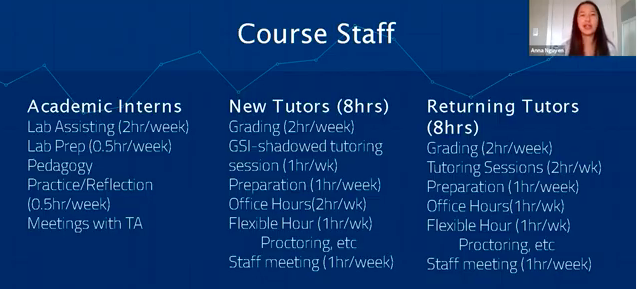

Foundations of Data Science Course
Contents
Foundations of Data Science Course#
Overview#
Foundations of Data Science (Data 8) is an introductory data science course that combines principles and skills in statistics, programming, inference, modeling, hypothesis testing, visualization, and exploration. It provides a foundation in the many fields encompassed within data science and gives students a practical introduction to the technical field. There may be several hundred students registered for Data 8 during any given semester. Undergraduate student instructors are employed to lead class discussion sections as well as grading for large classes. These students also serve as peer instructors to lower-division undergraduates taking the course. The course should be taken concurrently with a connector course. Some students might also be eligible to join Data Scholars if they are from marginalized groups.
Target Audience#
First-year students interested in data science, undergraduates with no prior experience with data science, python, or advanced math and statistics, and students who want to explore STEM careers take the Foundations Course for an introduction to the process of analyzing data.
Goals#
This course introduces students to programming so that they can comfortably carry out computational data science techniques. Ethical implications and biases are heavily addressed while introducing machine learning, using real-world examples in lectures, labs, and homework.
Linking domain knowledge to data science as students learn coding and statistics is a key goal of the course. Students receive support from upper-classmen, near-peers who have roles as Undergraduate Student Instructors.
Developing science capital and identity involves introducing data science without prerequisite courses in advanced mathematics, statistics, or computer science.
The Foundations Course provides a personal experience for over 1,500 students each semester. To achieve this feat, the Foundations Course has forty-five teaching assistants (TAs),approximately six of whom are Head TAs who organize the system of teaching assistant support. Additionally, 150 academic interns …
As the slide below describes, tasks such as grading, staff meetings, and prep hours allow the instructional team to collaborate and teach the Foundations Coursethrough a weekly schedule across the semester.

Key Pedagogical or Curricular Strategies#
At its core, the course lowers the level of abstraction by using domain-related questions while teaching Python coding and statistical methods. Near-peer teaching takes place by undergraduate student instructors who have taken the course before and have some level of pedagogical training. A built-in grader for immediate feedback facilitates active learning while the student is completing assignments.
While the Foundations Course acknowledges the broader field, this course is designed to focus only on the computation skills that students need in order to work with data. For example, the necessary prerequisites for a Computer Science Course 1 include “Read and write compound expressions that involve variables and multiple data types.” The Foundations Course focuses on core strategies to prepare students for more complex work, such as working with methods to visualize the data with tables and arrays, as well as learning the differences between names and strings while avoiding unnecessary language syntax and semantics.
The goal is to write code that can do something interesting without learning about all kinds of compound expressions. The Foundations Course does teach the importance of syntax and programming languages in writing down computational simulations.
Visualize then qualify.
Teach with real data whenever possible.
Key Diversity and Inclusion Practices and Strategies
The Foundations Course is designed to be inclusive of all students. Inclusion is built through the belief that all students’ lives and educational experiences can be enriched through data literacy.
This course—and all of the other UCB Data Science Educational Program courses—are built with open-access infrastructure and tools.
Jupyter Notebooks are easily accessible for students with little data or statistical knowledge. This provides students with both a low barrier to entry and the basis to develop a positive data science identity.
Links to Key Cyber Resources and their Implementation
The Foundations Course website has all previous iterations of the course here.
The Jupyter Book from Zero to Data 8 goes over the pedagogical methods utilized in Data 8 and discusses how to begin teaching an introductory data science course at your university.
The Public Repository contains the Juptyer notebooks for the Homeworks, Labs, and Lectures. These materials are what the students work on through the course of Data 8.
The course textbook, Computational and Inferential Thinking: The Foundations of Data Science, is the textbook for Data 8 at UC Berkeley. The book is a free online textbook that includes interactive Jupyter notebooks and public data sets for all examples. The textbook source is maintained as an open-source project under the CC BY-NC-ND 4.0 License.
Data 8x is a Massive Open Online Course (MOOC) of Data 8 offered on edX that increases access for Data 8 to students around the world. The course contains recorded pedagogy videos by Professor John Denero, Ani Adhikari, and David Wagner.
Berkeley-centric guides for the Foundations Course teaching assistants and tutors: GSI handbook and Tutor handbook
UC Berkeley JupyterHubs guide contains information about all of the JupyterHubs at UC Berkeley and is a good reference for how our teams coordinate technical infrastructure across classes and resources.
Spring 2020 materials include links to slides, lecture videos, and Jupyter notebooks for each demo and lab assignment, and readings.
YouTube collection of Spring 2016 lectures] were hosted by the Webcast Department. Recordings of more recent iterations are available but only 2016 is saved as a playlist.
Datahub is the Berkeley JupyterHub.
Piazza is a communication tool used to post questions to the class and instructors with the option of sharing with everyone or only instructors. Must be set-up for each course iteration with all students invited to use the course’s thread.
Information on Data Stack shows what Berkeley focuses on.
Other Key Inputs#
Smaller lab sections for two hours with Undergraduate Instructors and Instructor Office Hours are available. They require signing up but are available every day of the week. The frequency of office hours and the lab requirements are meant to offset the large lecture setting.
Those in Data 8 are encouraged to take Connector courses during the same semester in order to leverage the amount of time spent practicing coding and learning domain-specific theory. Students from marginalized groups can also join Data Scholars concurrently to enhance their exposure to data science mentors and career paths.
Narrative regarding links between Component Goals, Pedagogical Strategies, and Central Elements of the Program
Foundations of Data Science combines three perspectives: inferential thinking, computational thinking, and real-world relevance. Given data arising from some real-world phenomenon, how does one analyze that data so as to understand that phenomenon? The course teaches critical concepts and skills in computer programming and statistical inference, in conjunction with hands-on analysis of real-world datasets, including economic data, document collections, geographical data, and social networks. It delves into social issues surrounding data analysis, such as privacy and design.
Best Practices for Success/ Variation Across Institutions#
Institutions using different course management systems may need to adjust some of the cyberinfrastructures. The digital infrastructure of the course must be set up and tested before the course begins. Setting up a Jupyterhub can vary depending on the planned course size. Additionally, having an automatic grader is essential for large class sizes.
Two components of the program that require additional resources for near-peer teaching are Data Peers consulting and Undergraduate Student Instructors. The creation of Connector Courses and DS Modules will also require networking and collaboration with other campus departments.
Critical TA Professional Development and Training#
GSI training includes a full semester pedagogy 300-level course available in various departments and Professional Standards and Ethics Online Course.